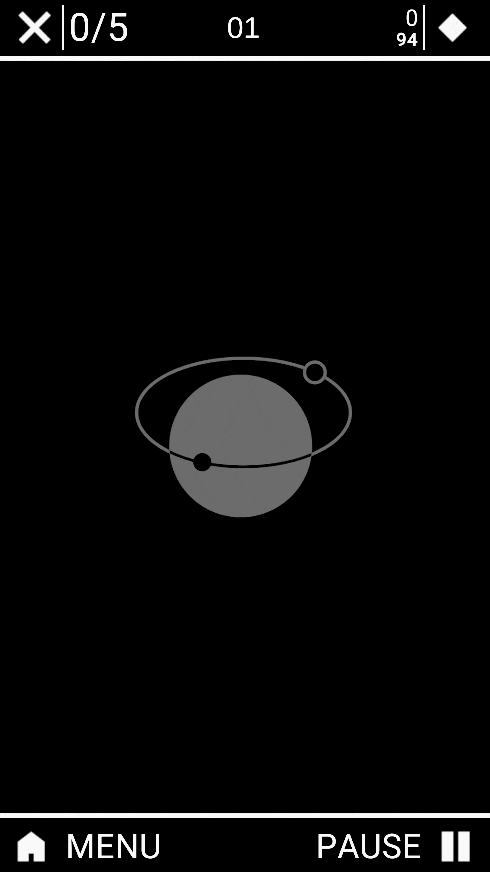
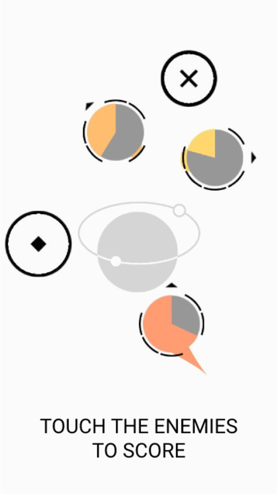
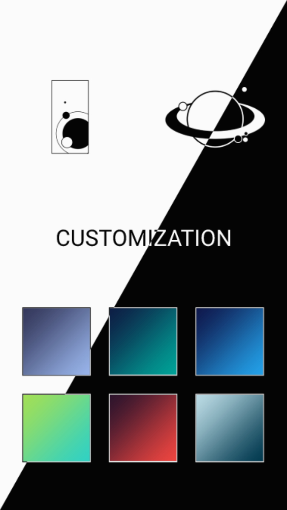

Ploppem
Summary
Ploppem is a minimal endless runner I developed to strengthen my skills and improve my portfolio as a game programmer.
Initially, it would have included various game modes and a more cartoonish art style, but after encountering several difficulties on the road, I decided to focus my time on polishing what I had already realized, and therefore reducing the project scope.
Gameplay

Game Systems

Customization

In the end, developing Ploppem teach me a lot of things, and even with all the problems it has, I'm proud of the result.
I hope you will give it a chance and enjoy playing it.